Explore the beauty of Kodagu with our guide to the must-visit attractions near Madikeri.
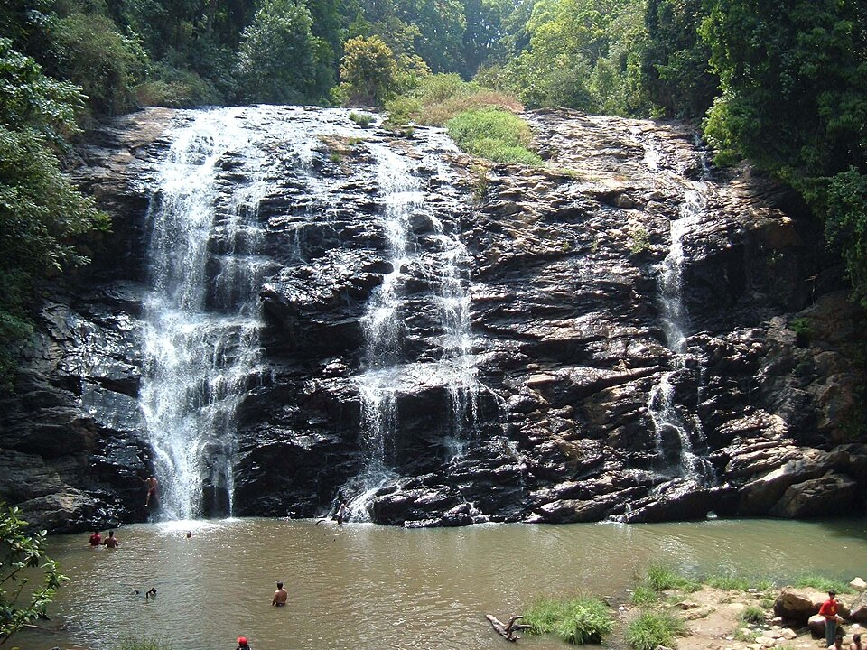
A stunning cascade nestled within coffee estates. Monsoons bring majestic torrents here, making it a must-visit waterfall in Coorg.
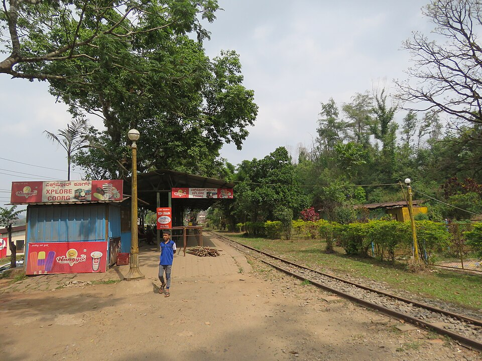
Historical sunset viewpoint featuring beautiful gardens and musical fountains. Once a favorite leisure spot for the Kings of Kodagu.
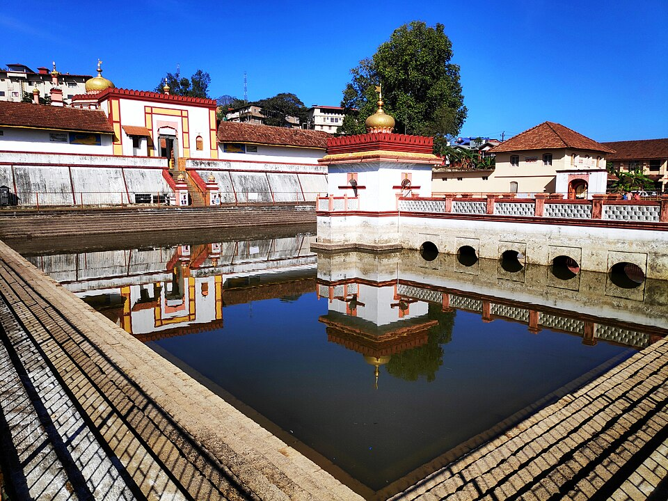
Built in 1820 by Lingarajendra II, this temple displays a gorgeous mix of Gothic and Islamic architectures with a central water pond.
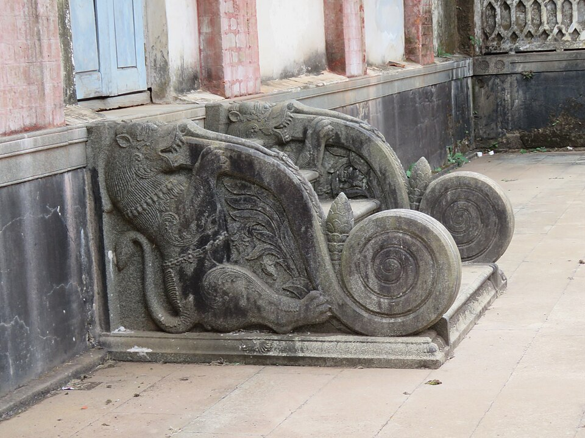
A historic 17th-century fort rebuilt in brick by Tipu Sultan. Features a palace, temple, church, and a museum containing royal weapons.
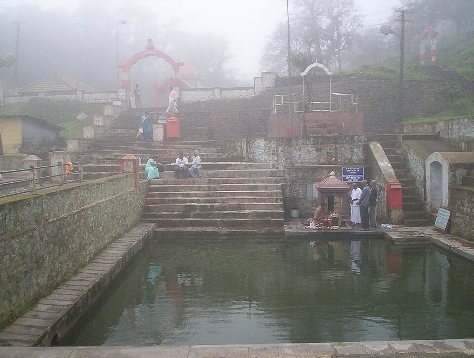
The sacred source of the Cauvery River located on the Brahmagiri hills. Famous for its holy spring and breathtaking panoramic hill views.
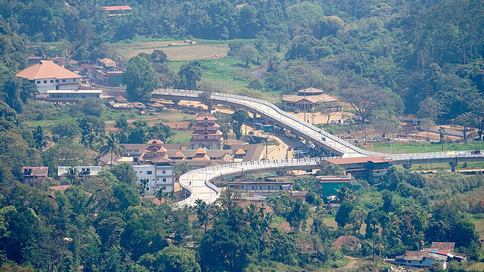
A revered temple town and pilgrimage spot hosting the Triveni Sangam (confluence of Cauvery, Kannike, and the mythical Sujyothi rivers).
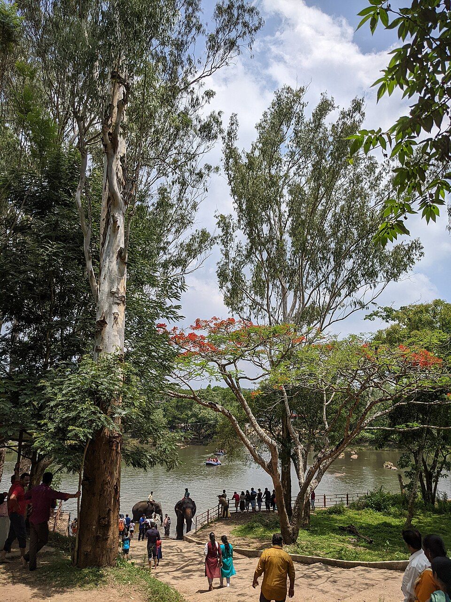
An eco-tourism camp situated on the banks of River Cauvery. Visitors can watch elephants bath, participate in feeding, and enjoy river rafting.
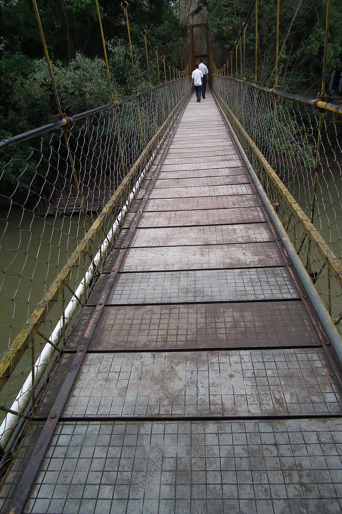
A scenic island formed by the River Kaveri. Features a hanging bridge, bamboo groves, sandalwood trees, deer parks, and boating options.
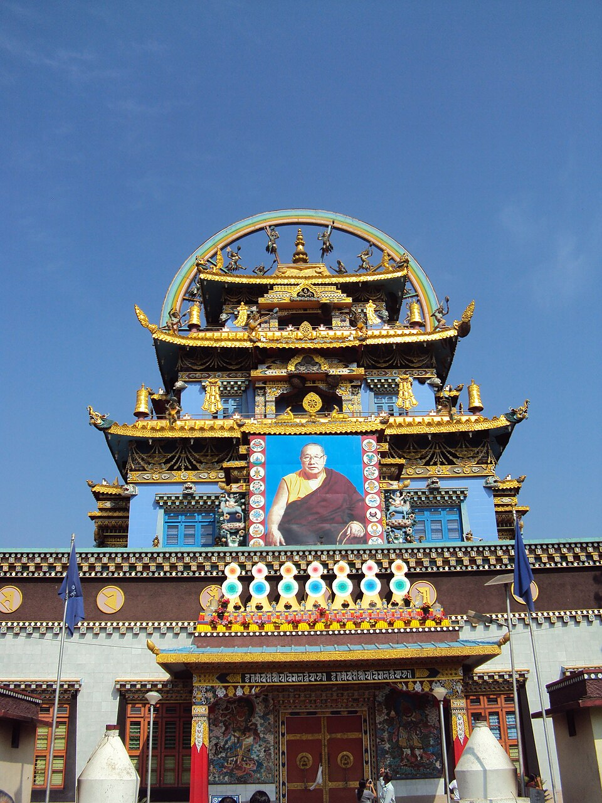
A prominent Tibetan Buddhist monastery in Bylakuppe. Houses stunning 40ft golden statues of Buddha, Padmasambhava, and Amitayus.
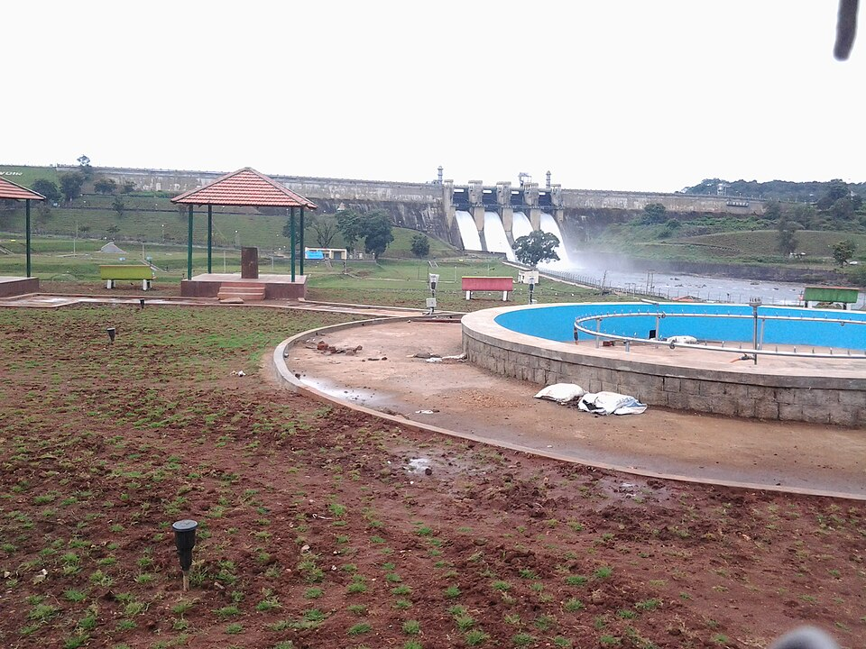
Built across a tributary of the Kaveri River, this reservoir is surrounded by mist and dense forests, creating a peaceful picnic spot.
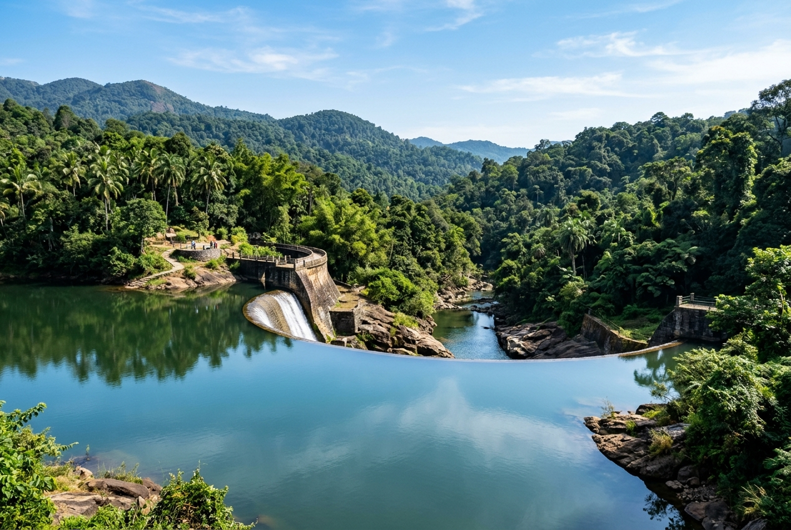
A serene water body located between Madikeri and Kushalnagar. Known for its unique semi-circular dam design and rich birdlife.
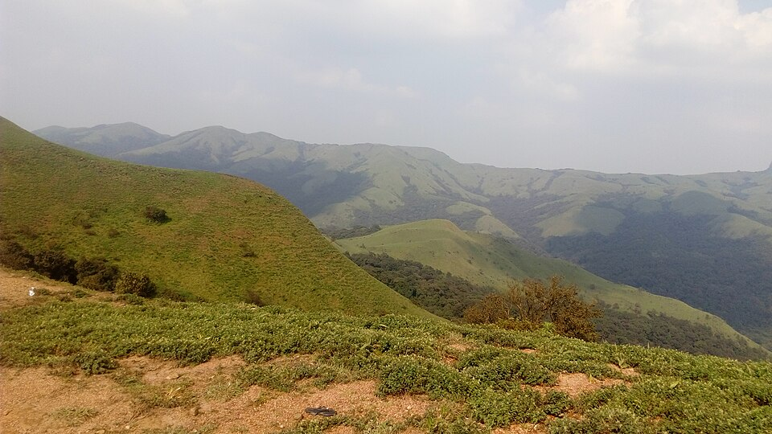
A scenic hill viewpoint accessed via a bumpy 4x4 Jeep safari drive. Famous for panoramic green peak horizons and heavy mist overlays.
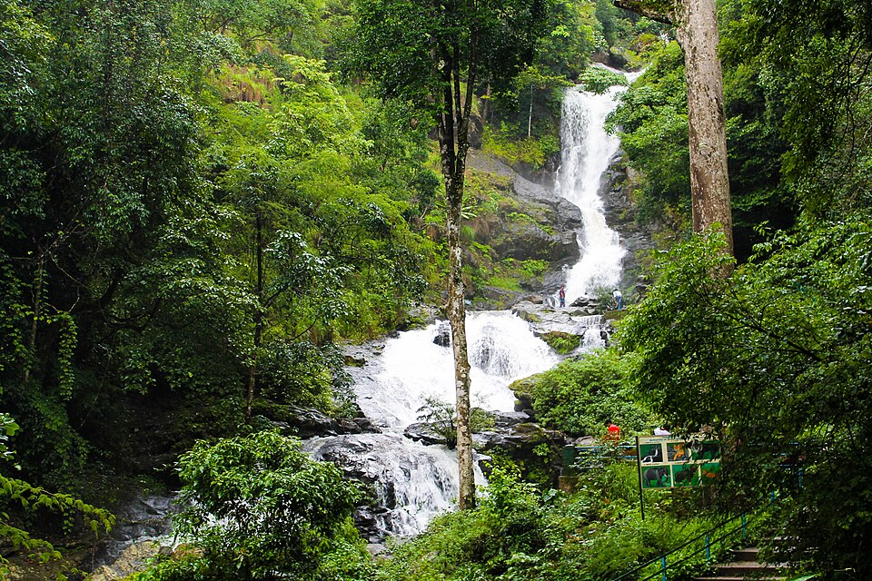
A sacred waterfall flowing down the Brahmagiri hills. Associated with legends of Lord Rama and located next to the Rameshwara Temple.
Book a customized taxi package to visit these amazing locations comfortably with our verified local drivers.
Book Sightseeing Tour